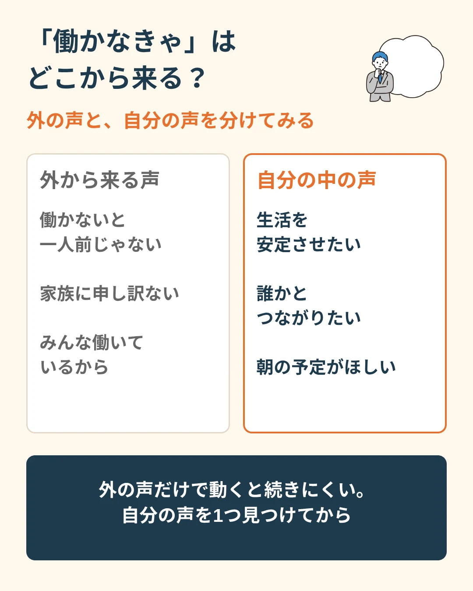
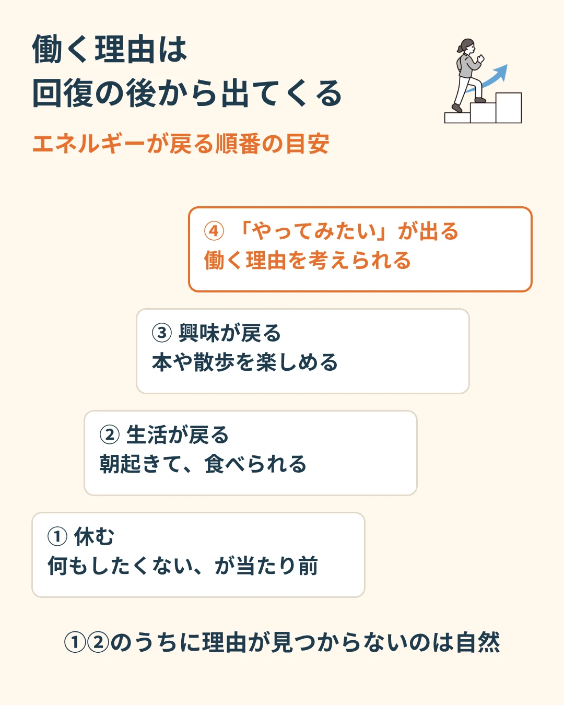
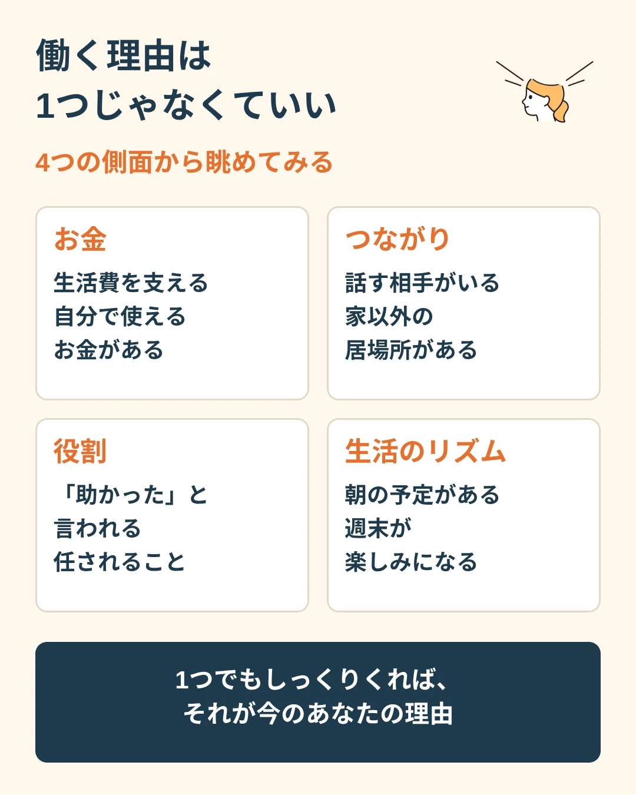
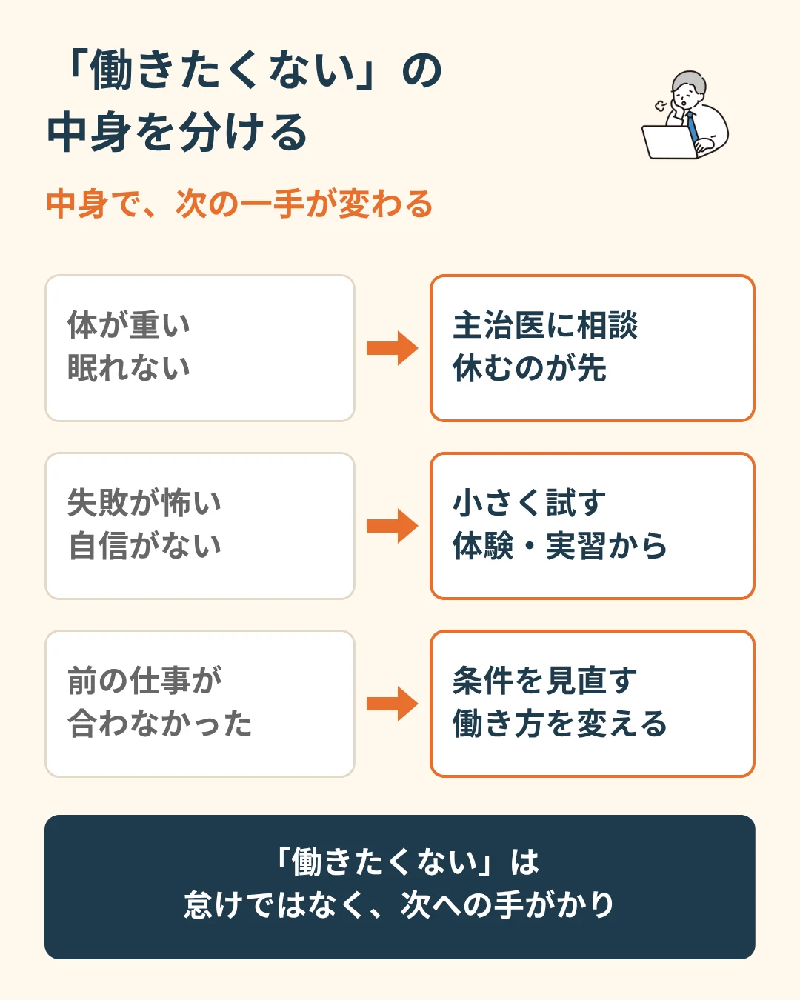
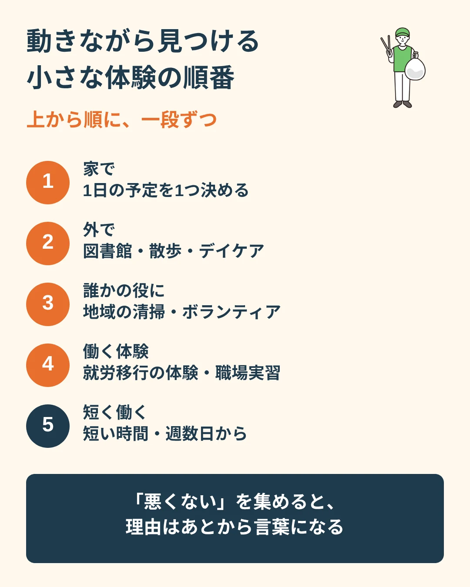

「働かなきゃ」はどこから来る？前提をいったん脇に置く
「働くのは大人として当たり前」「働かないと一人前じゃない」。私たちは小さいころから、こうした言葉をたくさん浴びて育ちます。だからこそ、仕事を離れている時間が長くなるほど、「働いていない自分には価値がない」という思いが強くなりがちです。けれども、障害や病気と付き合いながら働くことを考えるとき、この「当たり前」だけを燃料にすると、途中でガス欠を起こしやすくなります。
相談の場でよく聞くのは、こんな流れです。家族に申し訳ないから、とにかく応募する。周りが働いているから、自分も急がなきゃと思う。内定が出てほっとする。けれども、働き始めてから「自分はなぜここにいるんだろう」という問いが戻ってきて、体調の波が来たときに踏ん張る理由が見つからない。外から言われた理由だけで動くと、つらい日に自分を支えてくれるものがないのです。

ここで大事なのは、外からの声を「悪いもの」と決めつけないことです。家族に心配をかけたくない気持ちも、本物の気持ちです。ただ、その声の下に、自分の中から出てくる小さな声が1つでもあるかどうかで、働き始めてからの踏ん張り方が変わります。「生活費を自分で払えるようになりたい」「家の外に話せる人がほしい」「朝の予定があると体調が安定する」。大きな夢でなくてかまいません。
試しに、紙の左側に「言われている気がすること」、右側に「自分がちょっとでも望んでいること」を書き分けてみてください。左側ばかりが埋まる人も多いのですが、それで大丈夫です。右側が空っぽなのは、今はまだエネルギーが足りないだけ、ということがよくあります。そのことは、次の章でくわしく見ていきます。
「家族に悪いからって理由だけで応募していました。面接で『なぜ働きたいんですか』と聞かれて、何も出てこなくて。支援員さんと話して、『一人暮らしをしてみたい』という気持ちがあると気づいたら、少しだけ前向きに準備できるようになりました。」
働く理由が見つからないのは、回復の途中によくある状態
「働く理由が分からない」という状態は、病気の療養や長い休みのあとに、とても多く見られます。これは「やる気がない」「甘えている」ということではありません。心と体のエネルギーが減っているとき、人はまず生きるのに必要なことを優先します。眠る、食べる、休む。その段階では、「何のために働くか」という先の話を考える余裕がないのが自然です。

支援の現場で見ていると、エネルギーはおおむね上の図のような順番で戻ってきます。最初は「何もしたくない」が当たり前の時期。次に、朝起きて食事をとるといった生活が戻ってくる時期。そのあと、本を読む、散歩をする、好きだった音楽を聴くといった「楽しめること」が少しずつ戻ってくる時期。そして最後に、「何かやってみたい」「人の役に立ちたい」という気持ちが顔を出します。働く理由を考えられるのは、たいてい4段目に来てからです。
つまり、1段目や2段目にいる人が「働く意味が分からない」と感じるのは、むしろ自然なことです。この時期に無理に理由をひねり出そうとすると、「どうせ自分には何もない」という結論に行き着きやすく、かえって落ち込みが深くなります。今はまず、「今日は何時に起きられたか」「何を食べられたか」という小さなところに目を向けて、階段を一段ずつ上がることを優先してかまいません。
一方で、何週間も眠れない、食べられない、何をしても楽しくない状態が続いているなら、それは「理由が見つからない」以前に、体調が崩れているサインかもしれません。好きだったことまで楽しめない日が続くときは、一人で抱え込まず、主治医や医療機関に相談してください。いつから働けるかの目安は、うつで休んでいる。いつから働けるのかでもくわしく整理しています。
働く理由は1つでなくていい。お金・つながり・役割・リズム
「働く意味」と聞くと、「やりがい」や「夢」のような大きなものを思い浮かべるかもしれません。でも実際には、多くの人がもっと身近な理由で働いています。内閣府の「国民生活に関する世論調査」で働く目的をたずねた質問では、毎回おおむね6割前後の人が「お金を得るために働く」と答えています。「生きがいをみつけるため」「社会の一員として務めを果たすため」と答える人は、それぞれ1割ほどです。お金のために働くことは、ごく普通の理由なのです。
そのうえで、就労支援の現場で当事者の方の話を聞いていると、働く理由は大きく4つの側面に分けて考えることができます。1つ目はお金。生活費を支える、自分で自由に使えるお金がある、家族に頼りきりにならずにすむ。2つ目はつながり。家族以外に話す相手がいる、家の外に居場所がある。3つ目は役割。「助かったよ」と言われる、自分に任されることがある。4つ目は生活のリズム。朝の予定があることで生活が整う、平日があるから週末が楽しみになる。

この4つは、どれか1つでも十分な理由になります。たとえば、休職中に一日中家にいて昼夜が逆転してしまった方が、「とにかく朝の予定がほしい」という理由で週3日の短時間勤務を選び、生活リズムが整うにつれて「職場の人と話すのが楽しい」というつながりの理由が加わっていった、という例はめずらしくありません。理由は最初から全部そろっていなくていいし、働きながら増えたり入れ替わったりするものです。
反対に、4つのうちどれを重く見るかで、合う働き方も変わります。お金を一番に考えるなら、勤務時間や給与の条件をしっかり確認したい。つながりを大事にしたいなら、少人数で声をかけやすい職場が合うかもしれません。役割を感じたいなら、成果が目に見える仕事。リズムを整えたいなら、勤務時間が毎日同じ仕事。自分が何を大事にしたいかを知っておくと、求人を見るときの「ものさし」になります。自分に合う働き方の考え方は、「自分らしく働く」ってどういうこと？もあわせて読んでみてください。
面接で「なぜ働きたいのか」と聞かれると、立派な答えを言わなければと思いがちです。けれども「生活を安定させて、通院を続けながら長く働きたい」は、十分に伝わる志望理由です。お金という理由を、続けたい理由と組み合わせて言葉にしてみましょう。
自分の働く理由を見つける、書き出しワーク
働く理由は、頭の中だけで考えていると堂々めぐりになりがちです。紙やスマホのメモに書き出してみると、思っていたより手がかりが見つかることがあります。ここでは、就労支援の場でよく使う4つの問いを紹介します。一度に全部やる必要はありません。調子のいい日に、1つずつで十分です。
1つ目は、「これは楽しかった・やりがいがあった」と感じた経験を書き出すことです。仕事でなくてもかまいません。学生時代のアルバイト、文化祭の準備、家族の手伝い、趣味の集まり。「何をしていたか」だけでなく、「その中のどの瞬間が良かったか」まで書くのがコツです。たとえば「レジ打ちのアルバイト」ではなく「常連さんに名前を覚えてもらえたのがうれしかった」のように書くと、つながりや役割といった自分の大事にしたいものが見えてきます。
2つ目は、誰かの役に立てた経験を振り返ることです。友だちの相談にのった、家の片付けをしたら喜ばれた、パソコンの設定を手伝った。小さなことで十分です。3つ目は、「どんな生活をしたいか」から逆算すること。「月に1回は好きなライブに行きたい」「実家を出て一人暮らしをしてみたい」「通院しながら、週末はゆっくり休める生活がいい」。理想の1週間を書いてみると、そのために必要なお金や時間、働き方が見えてきます。
4つ目は、支援者と一緒に整理することです。自分では「こんなこと、理由にならない」と思っていることも、人に話すと「それ、立派な強みですよ」と言われることがよくあります。主治医、相談支援専門員、就労移行支援の支援員、家族など、話しやすい人に書いたものを見せてみてください。
- 楽しかった・やりがいがあった経験と、その中の「良かった瞬間」
- 仕事でなくてもいい、誰かの役に立てた経験
- 理想の1週間（何時に起きて、何をして、週末はどう過ごすか）
- 書いたものを見せられる人（主治医・支援員・家族など）
「正直、働く理由が分からなかった。でも就労移行支援で『自分が好きなこと・得意なこと』を書き出していくうちに、人に頼られるとうれしい自分に気づきました。理由がはっきりしたのは、実は働き始めて半年くらいたってからです。」
書き出してみて何も出てこなかった日も、失敗ではありません。「今日は何も浮かばなかった」と書いておくだけで、数週間後に見返したとき、「この頃はまだ疲れていたんだな」と自分の変化に気づく手がかりになります。
「働きたくない」と感じるとき。中身を分けて次の一手を選ぶ
「働く意味が分からない」と並んでよく聞くのが、「そもそも働きたくない」という気持ちです。この気持ちを持つと、多くの人が強い罪悪感を抱きます。けれども、「働きたくない」の中身は人によってまったく違います。そして、中身によって、取るべき次の一手も変わります。ひとまとめに「自分はだめだ」と結論づける前に、中身を分けてみましょう。

1つ目は、体が重い、眠れない、朝起きられないといった体のサインから来る「働きたくない」です。この場合は、気持ちの問題ではなく、まだ休息が必要な時期かもしれません。働く理由を探すより先に、主治医に今の状態を伝え、治療や休み方を相談することが優先です。2つ目は、また失敗するのが怖い、自信がないという不安から来る「働きたくない」です。前の職場で叱られた、続かなかったという経験がある方に多く見られます。この場合は、いきなり就職するのではなく、職場体験や実習、就労移行支援の体験利用など、失敗しても大丈夫な場で小さく試してみることが助けになります。
3つ目は、前の仕事や職場が合わなかったことから来る「働きたくない」です。長時間労働、人間関係、苦手な作業の連続。この場合、「働くこと」そのものではなく、「あの働き方」が嫌だったという可能性があります。勤務時間を短くする、障害者雇用で配慮を受けながら働く、作業内容が自分に合った仕事を選ぶなど、条件を変えることで気持ちが動くことがあります。働きたくないと思うことへの罪悪感については、「働きたくない」と思うことへの罪悪感でもていねいに扱っています。
家族の方にもお伝えしたいことがあります。本人が「働きたくない」と口にしたとき、すぐに「甘えだ」と返すと、本人はそれ以上本音を話せなくなります。まずは「そう感じているんだね」と受け止めたうえで、「体がしんどいのか、怖いのか、前の仕事が合わなかったのか」と、中身を一緒に見てもらえると助けになります。家族だけで抱えきれないときは、地域の相談支援事業所や障害者就業・生活支援センター、精神保健福祉センターなどに、家族として相談することもできます（2026年11月時点）。
動きながら見つかる。小さな体験から始める順番
ここまで読んで、「それでもやっぱり理由が分からない」と感じている方もいると思います。それで大丈夫です。働く理由は、考えてから動くのではなく、動きながら見つかることがとても多いからです。実際に何かをやってみて「意外と悪くなかった」「誰かと話せてほっとした」という体験を重ねるうちに、自分が何を大事にしたいのかが、あとから言葉になっていきます。

小さな体験は、上の図のような順番で考えると始めやすくなります。まずは家の中で、「10時に起きて、昼に散歩する」など1日の予定を1つ決めること。次に、図書館やカフェ、デイケアなど、家の外で過ごす時間をつくること。そのあと、地域の清掃活動やボランティアなど、誰かの役に立つ体験。さらに、就労移行支援の体験利用や職場実習など、働くことに近い体験。最後に、短い時間や週に数日から実際に働いてみる、という順番です。
それぞれの段階で、体験のあとに「やってみてどうだったか」を一言メモしておくのがおすすめです。「疲れたけど、話しかけてもらえてうれしかった」「作業に集中している時間は、悩みを忘れられた」。こうしたメモが、第3章の4つの側面のどれが自分に合っているのかを教えてくれます。働く前の生活の土台を整える支援としては、自立訓練（生活訓練）のような場もあります。就職活動をいつから始めるかの目安は、就活はいつから始める？働く準備ができた目安とチェック表でまとめています。
焦りが強いときは、「このままでいいのか」という気持ちとどう付き合うかも大切です。「このままでいいのか」という焦りとどう向き合うかも、よかったら読んでみてください。働く意味は、誰かに教えてもらうものではなく、小さな体験の中から自分で拾い集めていくものです。
よくある質問
関連記事
「働く理由が分からない」のままで、話しに来てください
答えが出ていなくても大丈夫です。mimemimeの無料相談では、今の体調や気持ちを聞きながら、あなたにとっての働く理由を一緒に探すところから始められます。ご家族からのご相談も受け付けています。
無料で話してみるこの記事に、聞いてみたいことはありますか？
「自分の場合はどうなんだろう」と思ったことを、気軽に書いてみてください。いただいた質問は個別にお返事したうえで、匿名で記事にすることがあります。
mimemime代表。就労支援の現場経験をもとに、障がいのある方の働く不安に寄り添う記事を執筆。